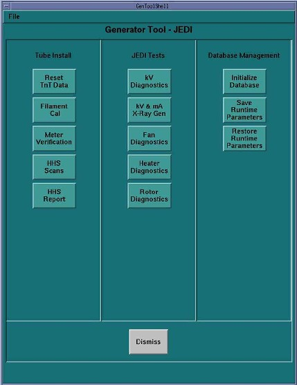

Proprietary to General Electric
Direction 5307452-8EN, Rev# 4
Discovery CT750 HD Service Methods - Adv
Proprietary to General Electric |
| Required Persons | Preliminary Reqs | Procedure | Finalization |
|---|---|---|---|
| 1 | Timing Not Applicable | 30 mins | Timing Not Applicable |
This module documents the “HHS Scans” procedure that runs an automated scan sequence and measures the kV and mA at times during the scan to ensure that the system is properly calibrated.
| Last Revised: | October 27, 2008 |
On the console select the [DIAGNOSTICS] tab in the Common Service Desktop.
Launch the [GENERATOR TOOL] . When the tool appears select the [HHS SCANS] button. Refer to Illustration 1 for the layout of the generator tool interface.
Illustration 1: Generator Tool

The Start Scan button on the SCIM will be flashing. Press the [START SCAN] button to begin running the HHS scans.
The tool will let you know if it passes.
The scan data will be stored on the system and can be viewed using the [HHS REPORT] button.
| NOTE: | The HHS report information can be found in the file /usr/g/service/log/gencal.hhs_scan.report. |
If the system does not pass, then you can isolate the root cause of the problem by running the following procedures in the order shown below. Failures found during these procedures will indicate the appropriate corrective action.
No finalization required.